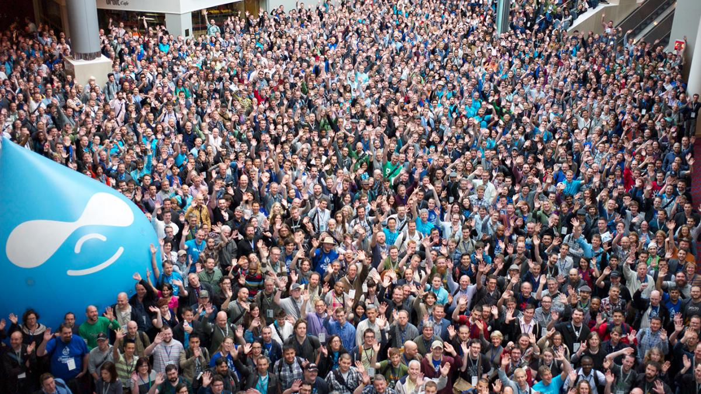
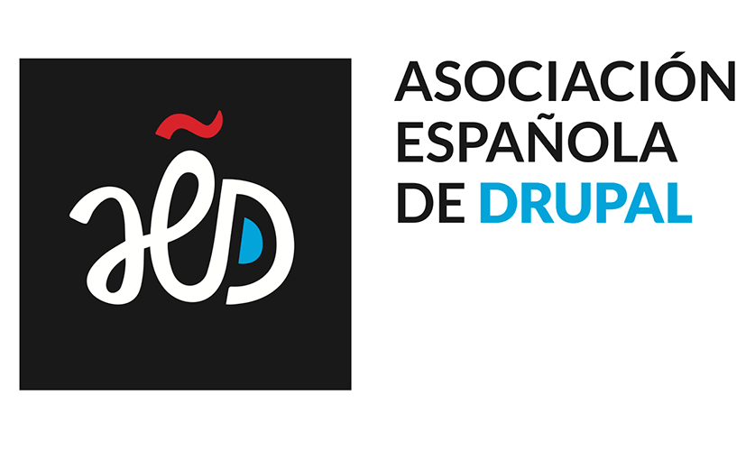
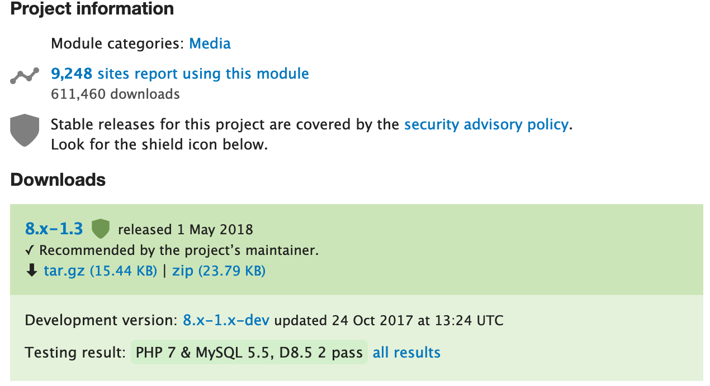

“We're the leading open-source CMS for ambitious digital experiences”
Producto para construir soluciones web de tamaño mediano a grande
En 2000 2 estudiantes en Antwerp, Dries Buytaert and Hans Snijder, crean un puente wireless entre dormitorios y se dan cuenta que les falta la funcionalidad de hablar entre ellos
En 2001 liberan el código para que otros puedan ayudar a mejorar la plataforma
BDFL - Benevolen Dictatorship For Life
Desarrolladores
Asociaciones locales
Todo usuario registrado puede crear
Calidad no verificada
Algunos módulos muy usados acaban entrando en core
“La meritocracia es una forma de gobierno basada en el mérito, y en términos más generales, se refiere a la discriminación positiva por méritos.”
Tener tiempo libre para contribuir es un privilegio.
The privilege of free time in Open Source - DriesDrupal es una mole muy grande a cambiar.
Políticas y burocracia interna muy lentas.
Sentir que no se tiene capacidad de decidir.
Presión por el hecho de ser iniciativa clave.
Las fechas lanzamiento Drupal 9 condicionan las features y el timming.
El trabajo lo hace un equipo de voluntarios
¿Qué saca la gente de trabajar en esto?
Las recompensas son a largo plazo.
¿Meritocracia?
Gente de todo el mundo
Asia, EUA, EU
Opinadores profesionales.
Falta de diseñadores:
el diseño está bloqueando la implementación.
Think big changes...
...¿y si no se pueden implementar?
Open source en un entorno/sector profesionalizado:
priman los beneficios, se contrybuye menos.
Ejemplo nombre Claro
2 líneas de desarrollo
Herramientas online Google docs/Figma
Call for volunteers a nivel de diseño.
Comunicación más fluida con publicaciones periódicas
Necesario para: